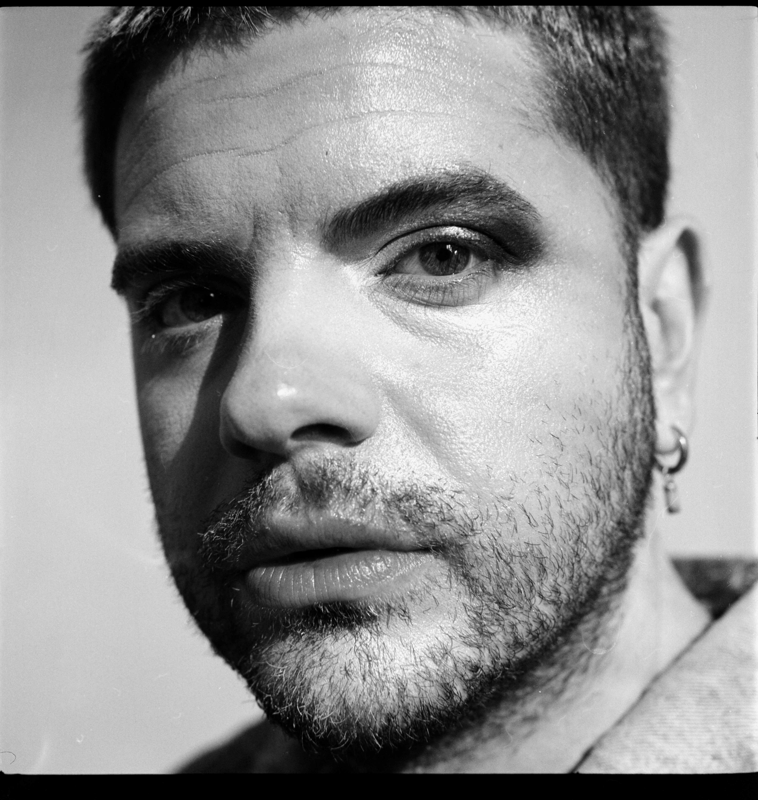
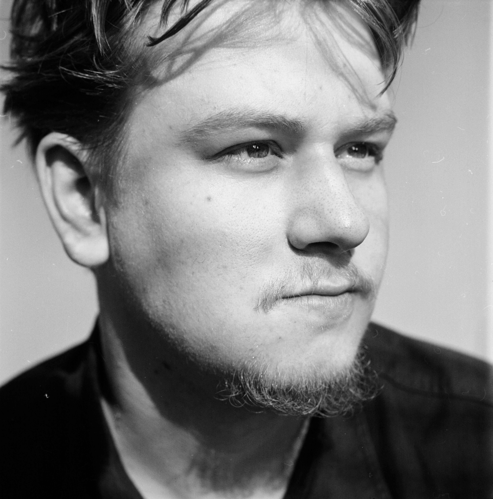

Rik Versteeg is een queer visueel kunstenaar en professioneel fotograaf uit Rotterdam. Hij werkt in opdracht en aan eigen projecten, vaak met een focus op portret, identiteit en de gelaagdheid van beeld. Zijn werk beweegt zich tussen commerciële fotografie en autonoom artistiek werk, waarin persoonlijke verhalen en maatschappelijke thema’s regelmatig terugkomen.
De afgelopen jaren heeft hij zich steeds verder gespecialiseerd in analoge fotografie. Hij werkt met het volledige proces: van het fotograferen op film tot het ontwikkelen en het maken van handmatige afdrukken in de donkere kamer. Door deze combinatie van digitaal en analoog werk heeft hij een brede technische basis opgebouwd en veel praktische ervaring met verschillende fotografische workflows.
Die ervaring gebruikt hij om de donkere kamer te runnen als een toegankelijke, goed uitgeruste werkplek voor zowel beginnende als ervaren fotografen die zelf met analoge fotografie aan de slag willen.

Luca van Ruiten is een fotograaf die zich voornamelijk bezighoudt met documentair fotografisch werk rondom de queer gemeenschap in Nederland. In zijn praktijk onderzoekt hij thema’s als identiteit, representatie en zichtbaarheid, vaak met een persoonlijke en directe beeldtaal. Zijn werk kenmerkt zich door een sterke focus op portret en het vastleggen van intieme, eerlijke momenten.
Naast zijn autonome werk heeft Luca een brede interesse in het fotografische proces als geheel. Hij werkt zowel digitaal als analoog en heeft zich verdiept in het ambacht van de donkere kamer: van het ontwikkelen van film tot het maken van prints. Deze combinatie van technieken stelt hem in staat om bewust keuzes te maken binnen verschillende workflows en materialen.